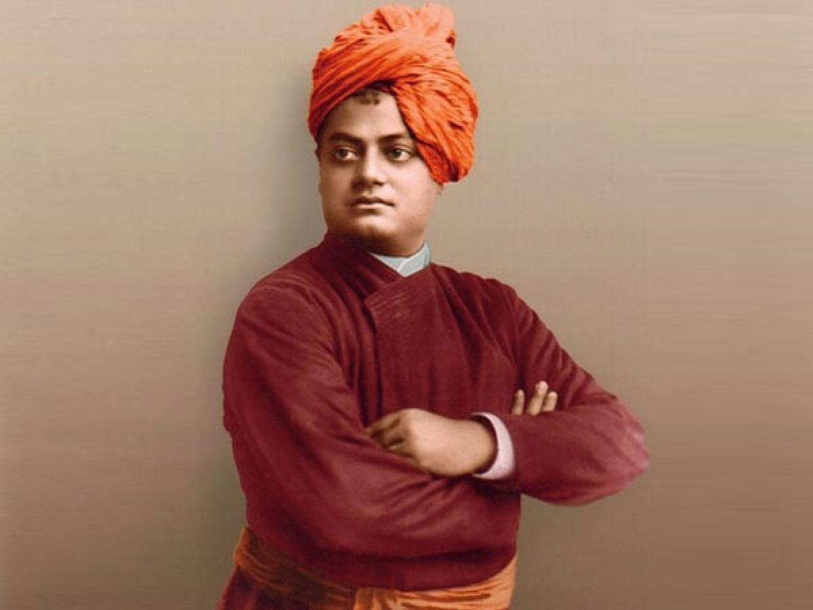

रामकृष्ण मठ नागपुर
Exam Portal

“उठो, जागो और तब तक मत रुको जब तक लक्ष्य प्राप्त न हो जाए।”
कृपया परीक्षा विषय चुनें
श्रीरामकृष्ण देव
20 प्रश्न | परीक्षा प्रारंभ करें →
स्वामी विवेकानन्द
20 प्रश्न | परीक्षा प्रारंभ करें →
श्री माँ सारदा देवी
20 प्रश्न | परीक्षा प्रारंभ करें →
विषय: चयन करें
परीक्षार्थी पंजीकरण (Registration)
विद्यार्थी का पूरा नाम (Full Name) *
← मुख्य पृष्ठ
परीक्षा प्रारंभ करें
विषय:
उत्तर जमा करें (Submit Answers)
परीक्षार्थी:
विषय:
परीक्षा परिणाम विश्लेषण (Result Analysis)
0
कुल प्रश्न
0
सही उत्तर
0
गलत उत्तर
0%
प्राप्तांक प्रतिशत
परिणाम प्रिंट / PDF सेव करें
मुख्य पृष्ठ पर लौटें
विस्तृत प्रश्नवार समीक्षा (Detailed Review):
To Know About Ramakrishna Math Nagpur
→
Total Visitors: